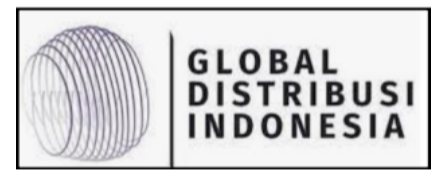
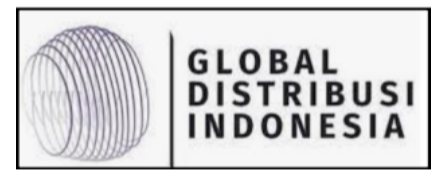

5 Metric dalam mengukur pertumbuhan bisnis

- Awareness: Pada tahap ini, fokus Anda adalah mendidik pasar. Sosialisasikan konten dengan informasi berharga untuk audiens atau target pasar Anda. Lakukan pemasaran lembut (soft selling) dengan memprioritaskan informasi yang bermanfaat untuk masalah target pasar Anda dan memberikan solusi melalui produk atau layanan Anda dengan konten penjualan yang minimal.
- Acquisition: Setelah berhasil mendidik pasar, bisnis Anda harus mulai berfokus untuk mendapatkan pelanggan dengan mengidentifikasi dan menganalisis semua kebutuhan dan keinginan target pasar. Jelajahi semua peluang untuk menawarkan produk dan layanan Anda ke pasar yang sudah dididik. Buka diri untuk menyediakan program uji coba gratis (free trial) untuk memastikan pelanggan membeli produk dan layanan yang tepat. Tahap ini juga merupakan waktu untuk menemukan kesesuaian produk dengan pasar (product-market fit) secepat mungkin. Anda juga dapat beralih ke pasar pesaing pada tahap akuisisi. Jika ingin mengambil pangsa pasar dari pesaing, analisis keunggulan produk pesaing dan temukan kesenjangan di pasar untuk melakukan penyesuaian penawaran produk dan layanan Anda secara efektif.
- Retention: Memastikan pelanggan datang kembali (retensi) adalah kunci untuk kelangsungan bisnis Anda. Pada tahap ini, berikan layanan yang sangat baik kepada pelanggan Anda, menciptakan kepuasan dan rekomendasi secara organik melalui word-of-mouth. Terapkan program loyalitas atau keanggotaan untuk pelanggan yang ada agar mereka terus melakukan transaksi dengan bisnis Anda dan tidak beralih ke pesaing. Lakukan riset secara berkala untuk memahami aspirasi dari pelanggan yang sudah ada.
- Referral: Tahap ini menekankan pada strategi berdampak tinggi namun dengan biaya rendah. Referensi terjadi ketika pelanggan yang sudah ada merekomendasikan bisnis Anda kepada keluarga dan teman-temannya. Terapkan program insentif atau reward untuk pelanggan yang sudah ada yang membawa pelanggan baru ke bisnis Anda.
- Revenue: Pada tahap ini, fokus pada menghasilkan pendapatan sesegera mungkin, terutama jika bisnis Anda bukan perusahaan startup yang mengincar pasar B2C. Maksimalkan potensi pendapatan dari setiap transaksi pelanggan. Kembangkan model bisnis yang tepat dan berkelanjutan. Perkirakan siklus hidup produk bisnis Anda dan potensi pendapatan tahunan yang dapat dihasilkan dari setiap pelanggan. Selain itu, studi harga produk sejenis dari pesaing untuk menciptakan strategi penetapan harga yang mempertimbangkan harga pesaing.
Selain 5 metric di atas, terdapat beberapa metric pertumbuhan bisnis lain yang dapat diimplementasikan untuk bisnis Anda. Jika Anda memerlukan mitra yang dapat memberikan garansi pertumbuhan untuk bisnis Anda, Restrategix dapat membantu mempercepat dan mengembangkan bisnis Anda dengan hasil yang signifikan. Mereka tidak hanya menyediakan kerangka kerja, tetapi juga terlibat langsung dalam pengembangan bisnis Anda. Silakan hubungi kami untuk berkonsultasi langsung dengan tim konsultan Restrategix.
Our Clients
 
